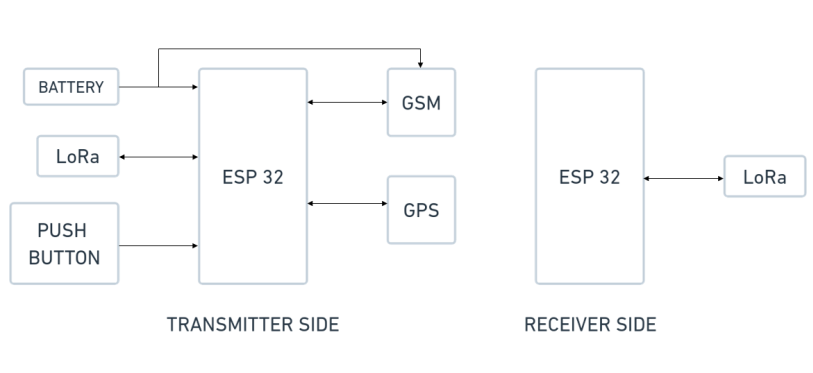
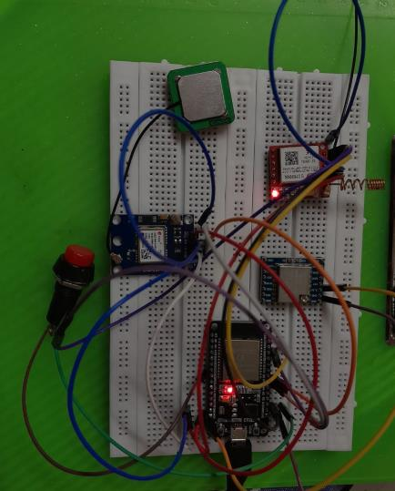
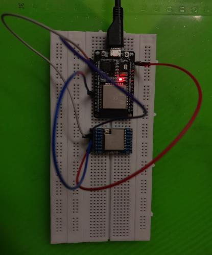
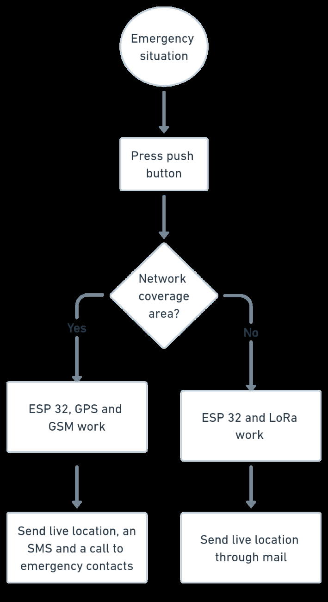

PROJECT 01
NOV 2024 — FEB 2025
ESP32 · GPS · GSM · LoRa · EMBEDDED SYSTEMS
SMART WEARABLE
SAFETY DEVICE.
An ESP32-based emergency safety system combining real-time location tracking with dual-channel communication, using GSM when network coverage is available and LoRa as a fallback in areas without cellular connectivity.
Emergency communication
cannot depend on one path.
The project focused on a practical emergency-alert device that could be triggered without relying on a smartphone. The design needed to provide location information, communicate with predefined contacts, and remain useful when cellular network coverage was unavailable.
A push-button mechanism for initiating an emergency alert.
GPS-based geographical coordinates for rapid location reporting.
LoRa communication for situations where GSM connectivity is unavailable.
A compact, energy-conscious architecture intended for wearable use.
One controller.
Two communication paths.
The submitted project report defines an ESP32-centered architecture with GPS and GSM on the transmitter side, plus a LoRa link to a separate ESP32 receiver. The push button initiates the emergency sequence.

Trigger first.
Then choose the route.
SITUATION
PUSH BUTTON
COVERAGE?
+ GSM
+ SMS + CALL
+ LoRa
THROUGH LoRa
From schematic
to hardware.
These are the transmitter and receiver prototype photographs included in the submitted project report.


The emergency sequence
in one view.
The project flow chart shows the trigger, network-availability decision, GSM/GPS path, and LoRa fallback path.

Engineering the path
from trigger to alert.
Worked on the ESP32-based wearable architecture integrating GPS, GSM and LoRa modules.
Implemented the dual-channel communication approach, using LoRa as a fallback when GSM connectivity was unavailable.
Developed the SOS alert mechanism to transmit emergency notifications with real-time geographical coordinates to predefined contacts.
Worked on GPS-based location tracking and communication workflows for portable operation.
Validated the system across field-testing scenarios covering communication range, location accuracy and emergency-response reliability.
Reliability is not
just a component choice.
Provides the geographical coordinates needed for an emergency response.
Supports emergency messaging and calls when cellular connectivity is available.
Extends the communication strategy beyond areas with cellular coverage.
The central engineering idea was simple: an emergency system should have another route when its primary communication path fails.
PROJECT TAKEAWAY
DESIGN FOR THE
UNEXPECTED.
A wearable safety system becomes more useful when sensing, location and communication are designed as one connected system.
← BACK TO WORK